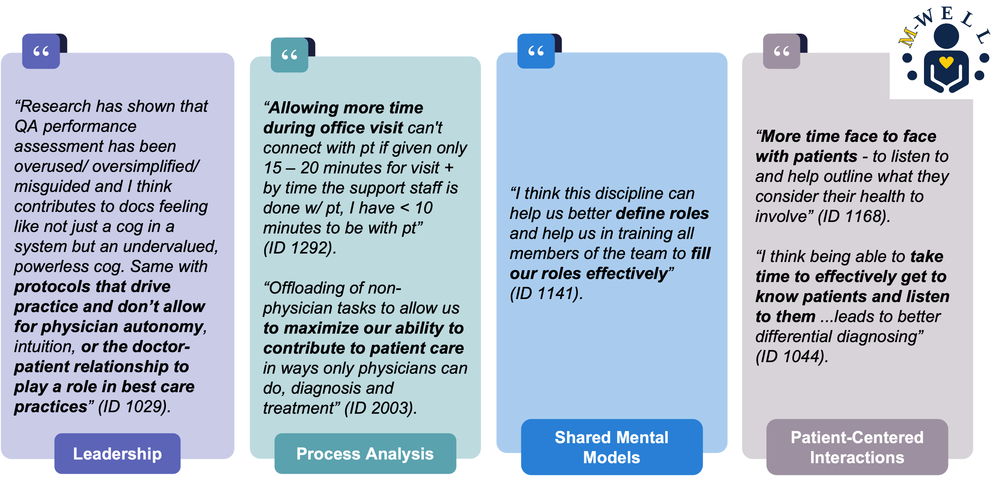

PROJECT
Exploring Systemic Factors Impacting Clinician Well-Being in Internal Medicine
This work examined the internist perspective on X.
This work reinforced the idea that work system design influences internist well-being by taking away time from direct patient care and forms the foundation for my broader research on exploring what connection means to patients. There is also a large misunderstanding of what HFE is among most general internists.
